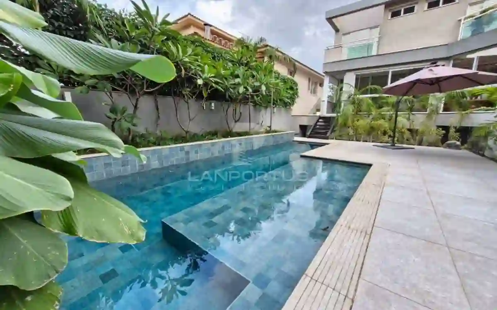
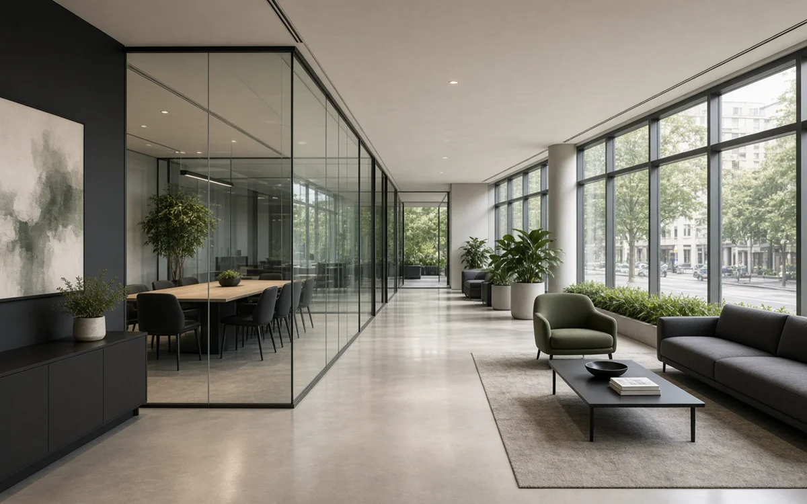
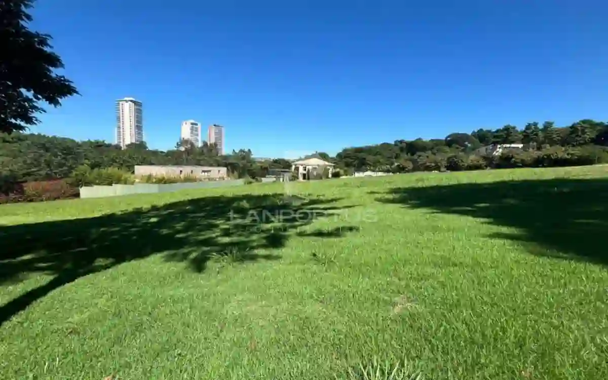
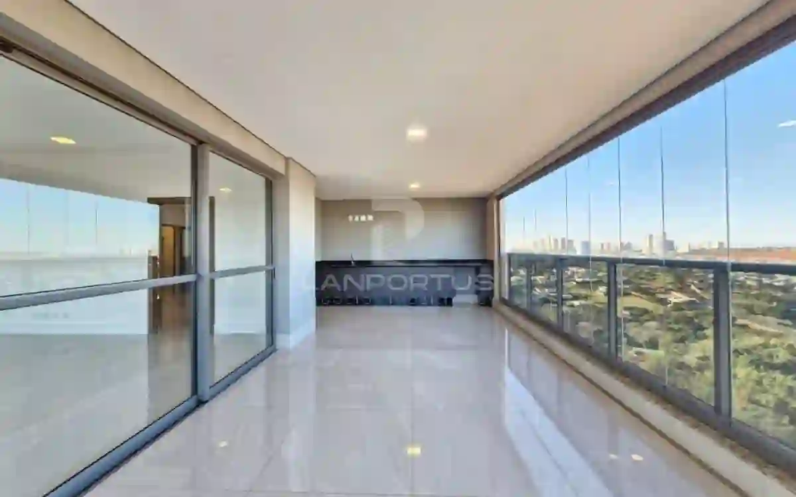
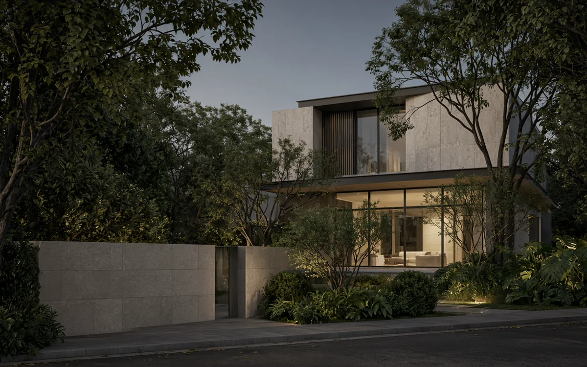
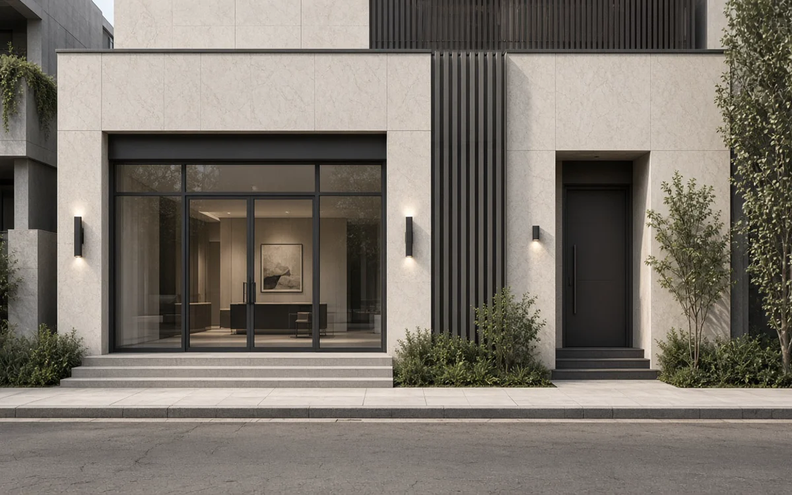

Residencial · Curadoria
Casa com programa claro
Perfil: família que prioriza privacidade e circulação fluida. Critério: planta coerente, insolação e margem para adaptação sem obra estrutural.
Destaques
Cards ilustrativos de curadoria. O valor está no encaixe entre perfil, imóvel e momento, não no metragem isolada.

Perfil: família que prioriza privacidade e circulação fluida. Critério: planta coerente, insolação e margem para adaptação sem obra estrutural.

Perfil: investidor com horizonte médio. Critério: localização com fluxo, flexibilidade de layout e manutenção previsível.

Perfil: quem quer escolher o lugar antes de definir a obra. Critério: visitas comigo, coerência entre terreno ou casa e o uso desejado, próximo passo claro.

Perfil: quem aceita reforma pontual. Critério: estrutura boa, planta resgatável e condomínio com gestão transparente.

Perfil: quem busca recolhimento sem isolamento. Critério: afastamentos, acústica do entorno e qualidade de acabamento já consolidada.

Perfil: quem equilibra uso próprio e eventual renda. Critério: acessos independentes, zoneamento favorável e adaptação sem perda de valor.
Curadoria sob medida
Conte o objetivo. Montamos o contraste a partir do seu critério, não de um catálogo genérico.
Agendar uma conversa